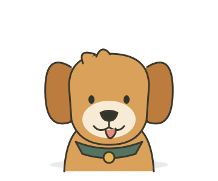
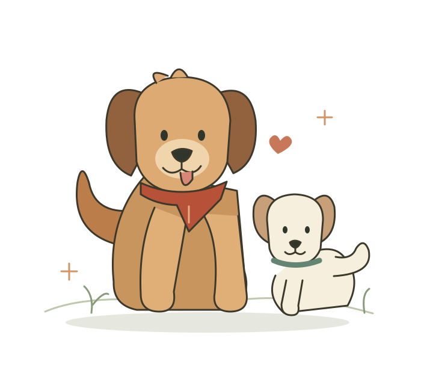
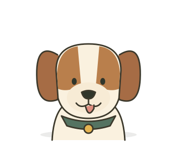
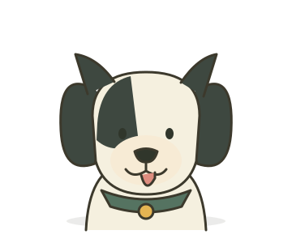

01 / DRUGARZlatni retriver
Sunce u obliku kučića. Loptica, društvo i nova šetnja zvuče kao savršen plan.
Za zajedničke avantureMALI KUTAK ZA LJUBITELJE PASA
Mokar nos. Veseli rep. Prijatelj za svaki dan.
Dobro došao u mali svet naših omiljenih kučića.

100%SVAKO IMA SVOJ ŠARM
Neko voli avanture. Neko tvoju fotelju.
A svi vole da budu deo tvoje priče.
3 njuške za upoznavanje

01 / DRUGARSunce u obliku kučića. Loptica, društvo i nova šetnja zvuče kao savršen plan.
Za zajedničke avanture
02 / ISTRAŽIVAČNos koji uvek ima neku ideju. Svaki miris je početak jedne sasvim nove priče.
Mali radoznali duh
03 / ORIGINALJedinstvena kombinacija šapa, ušiju i karaktera. Poseban prijatelj, baš po svojoj meri.
Jedan jedini takavNema rezultata. Probaj kraći naziv ili izaberi Sve njuške.
Svaki pas je jedinstven — upoznaj njegov karakter, bez obzira na rasu.
MALE STVARI, VELIKA SREĆA
Ne treba vam veliki plan. Samo malo pažnje,
radoznalosti i mesta za još jednu šetnju.
Nova staza i dovoljno vremena za njuškanje.
Omiljena igračka i tvoj najveseliji glas.
Malo maženja nakon svih tih malih avantura.
DOBAR DAN POČINJE MALIM PLANOM
Mali podsetnik za vreme koje provodite zajedno. Lista se čuva samo u tvom browseru, za današnji dan.
0 od 4 male radosti
KAD NE ZNAŠ ŠTA DALJE
Bez velikih planova.
Samo još jedan lep trenutak.
Sledeću šetnju počnite drugom ulicom i otkrijte nešto novo zajedno.
MALI VODIČI ZA VELIKO PRIJATELJSTVO
DOBRO JE ZNATI
Ne. Šapica je mali ilustrativni sajt za ljubitelje pasa. Prikazane njuške nisu stvarni oglasi. Za udomljavanje se obrati lokalnom udruženju ili azilu.
Samo u lokalnoj memoriji tvog browsera. Ne šaljemo ih na server i ne treba ti nalog. Brisanjem podataka browsera brišeš i listu.
Da, sve ilustracije, tekstovi, vodiči i pitanja su dostupni. Pretraga, favoriti i čuvanje dnevne liste koriste JavaScript.
Kod je na GitHubu, a objavljen je preko Shipvele. Ovaj demo proverava novi build, lokalne fajlove, više stranica i HTTPS.
Neke od najboljih stvari u životu
ostavljaju tragove šapa.